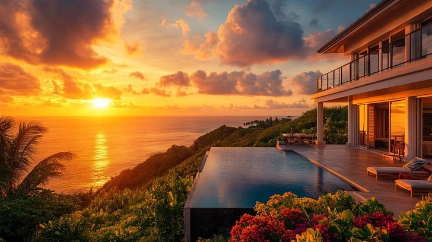

<!DOCTYPE html>
<html>
    <head>
        <title>Villa</title>
    </head>
</html>
<body>
    <center>
        <h1>AURA VILLA🏯</h1>
        <p>Experience a villa that feels less like a destination and more like a feeling.</p>
        <h2>
                <div style="background:lightgrey; height: 70px;width:880px;" ><br>
            <a href="./index1.html">Rooms and Services ||</a>
            <a href="./index2.html">Offers and Packages||</a>
    <a href="./index3.html ">Booking Details.</a>
         </h2>
    
    </center>
    <hr>
    <center>
        
    <p>Aura Villa is a name commonly used for private luxury villas, boutique holiday stays, and residential developments that emphasize comfort, tranquility, and modern design. These villas typically feature spacious rooms, private pools, landscaped surroundings, and a calm atmosphere designed for relaxation. Whether used for short-term vacation rentals or long-term residential living, an “Aura Villa” often reflects a blend of contemporary architecture and natural elements, creating a peaceful retreat-like experience. Because the name “Aura” conveys serenity and positive energy, many independent properties across different locations adopt it to evoke a sense of luxury, wellness, and harmony.Because “Aura Villa / Aura Villas” is not a single global brand but a name used by many independent villa projects, hotels, and residents.</p>
    
    <p>Nestled in serene setting, this beautifully crafted villa features spacious interiors, abundant natural light, and thoughtfully designed outdoor areas. Whether used as a private residence for people, it delivers an exceptional lifestyle experience.The villa is designed to offer peace, privacy, and luxury. Large windows invite natural light, while open-plan spaces create a warm and welcoming atmosphere—ideal for family living, in comfort.The villa features expansive, light-filled interiors with floor-to-ceiling windows that frame stunning views and invite the ocean breeze indoors. Every detail has been carefully curated to deliver timeless elegance and superior comfort.Aura Villa is the ideal choice for those who seek comfort, privacy, and timeless luxury in truly inspiring setting.Thoughtfully crafted interiors are filled with natural light and open living spaces, while premium finishes and tasteful décor add an air of sophistication. Every corner of Aura Villa reflects harmony, elegance, and attention to detail.</p><br>
    
    <p>From morning coffee in the garden to evening celebrations under the lights, every moment at our villa is designed to be memorable. Whether you’re here to unwind or celebrate, the villa promises comfort, elegance, and lasting memories.Every corner of the villa is designed to provide a perfect balance of style and comfort. From airy interiors to carefully selected furnishings, the villa creates a welcoming atmosphere where guests can instantly feel at home.Enjoy the freedom of spacious indoor living areas combined with beautiful outdoor spaces. Whether it’s a relaxed evening in the garden, a poolside gathering, or a quiet morning on the terrace, the villa offers multiple settings to suit every mood.Whether you’re celebrating a milestone or simply taking a break from routine, our villa provides the perfect backdrop for unforgettable memories, meaningful gatherings.</p>
    
    </center>
    <br>
    <h2>
    <center>
       <div style="background-color:lightgray; height:220px;width:1500px"><br>
     <h3>Contacts:9843645468,9112345679</h3>
     <h4>No. 24, 3rd Cross Road Near Whitefield Main RoadBengaluru – 560066 Karnataka, India</h4>
     <h5>varshasekar@gmail.com</h5>
    
    </div>
    </center>
     </h2>

</body>
    
